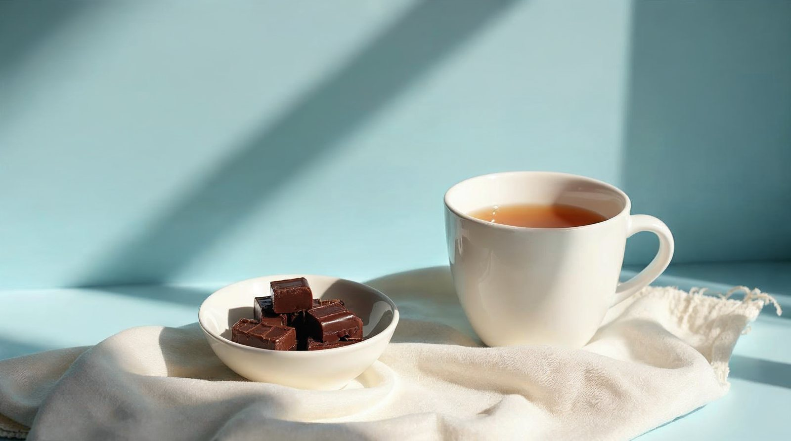
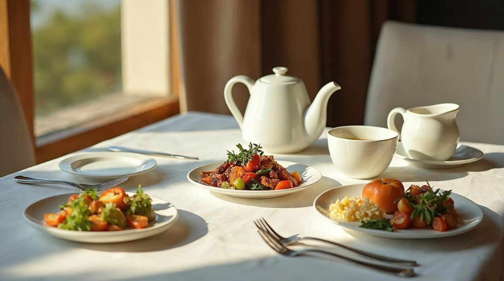
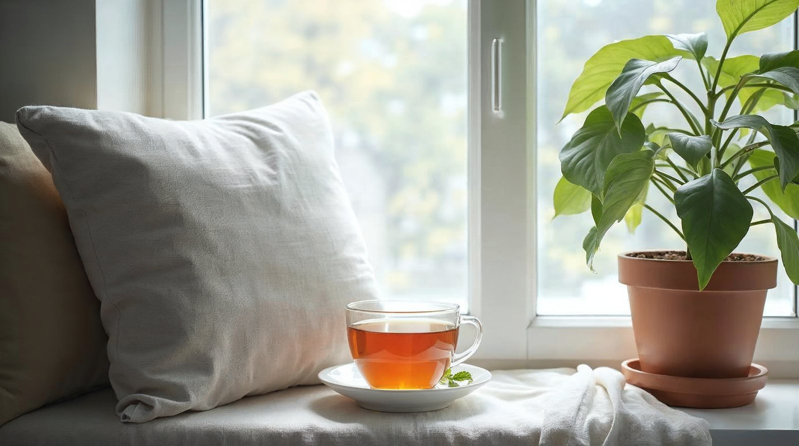
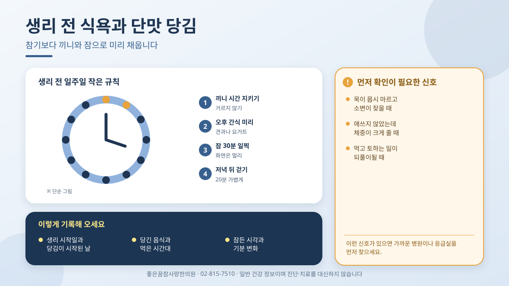

이종호 한의사 감수좋은꿈참사랑한의원 대표원장 (한의사 면허번호 19769)발행 2026-11-26 · 수정 2026-11-27
이 글의 차례
밤 열한 시, 분명 저녁을 든든히 먹었는데 냉장고 문을 또 엽니다. 초콜릿 한 조각으로 시작했는데 정신을 차려 보면 과자 봉지가 비어 있어요. 다음 날 아침엔 몸도 붓고 마음도 무겁습니다. 그리고 며칠 뒤 생리가 시작되면 그제야 '아, 그래서 그랬구나' 하고 고개를 끄덕이게 되죠.
진료실에서 이 얘기를 꺼내시는 분들은 대개 조금 부끄러워하세요. 의지가 약해서 그런 것 같다고, 다이어트를 망치는 건 늘 이 일주일이라고요. 저는 그 말씀을 들으면 먼저 이렇게 말씀드려요. 의지가 약해서가 아니에요. 원래 그래요. 생리 전 식욕이 커지는 건 몸에서 실제로 일어나는 변화거든요.
솔직히 식욕과의 싸움은 저도 하고 있어요. 사람은 원래 단 것 앞에서 연약해요. 그러니 그 일주일에 스스로를 너무 몰아세우지 않으셨으면 해요.
그러니까 사실은 두 가지를 나눠서 보셔야 해요. '당기는 것'과 '휘둘리는 것'은 다른 얘기예요. 당김 자체는 몸의 주기라서 막기 어렵지만, 거기에 얼마나 휘둘리느냐는 끼니와 잠에 따라 꽤 달라질 수 있거든요.
매달 같은 일주일에 같은 후회가 반복되면 몸무게보다 마음이 먼저 지쳐요. 그래서 이 글에서는 왜 그런 당김이 생기는지, 어떻게 덜 휘둘리며 지나갈 수 있는지를 차근차근 정리해 볼게요.
왜 생리 전에는 단 음식이 당길까요
배란이 지나고 생리 전 일주일 무렵에는 황체호르몬이 높아지고, 몸은 혹시 모를 임신에 대비해 에너지를 조금 더 모아 두려는 쪽으로 기웁니다. 실제로 이 시기에는 몸이 쓰는 에너지가 조금 늘어난다는 이야기도 있어, 배가 더 자주 고픈 것이 자연스러운 면이 있습니다.
기분과 관련된 신경 물질의 흐름도 함께 흔들립니다. 생리 직전에 에스트로겐이 떨어지면서 마음을 안정시키는 세로토닌의 작용이 약해지는데, 단 음식과 밀가루 음식은 이 기분을 잠깐 끌어올려 주는 역할을 합니다. 그래서 몸이 그쪽을 찾게 되는 것입니다.
문제는 단 음식으로 끌어올린 기분과 혈당이 금방 떨어진다는 점입니다. 한 조각 먹고 잠깐 편해졌다가, 한두 시간 뒤 다시 허전해져 또 찾게 됩니다. 이 오르내림이 하루에 여러 번 반복되면 '먹어도 먹어도 당긴다'는 느낌이 됩니다.
여기에 생리 전의 피로와 잠 부족, 예민해진 마음이 겹칩니다. 잠이 부족한 날에는 식욕을 높이는 신호가 강해지고, 포만감을 알리는 신호는 약해집니다. 그래서 같은 생리 전이라도 잠을 설친 주에 당김이 훨씬 심한 분이 많습니다.
한의학에서는 이런 모습을 기운이 떨어져 단맛으로 채우려는 흐름, 또는 속에 열과 긴장이 쌓여 허기처럼 느껴지는 흐름으로 나누어 설명하기도 합니다. 진찰할 때 몸의 경향을 읽는 전통적인 설명이며, 사람마다 어느 쪽이 두드러지는지는 다릅니다.
감정적 폭식이나 다른 이유와는 어떻게 다를까요
생리 전 당김은 생리가 시작되고 하루 이틀 지나면 거짓말처럼 가라앉는 경우가 많습니다. 반대로 생리 주기와 상관없이 속상하거나 지친 날마다 배가 고프지 않아도 계속 먹게 된다면, 감정과 연결된 폭식 쪽을 함께 살펴봐야 합니다.
두 가지가 겹쳐 있는 분도 적지 않습니다. 평소에도 스트레스를 음식으로 푸는 편인데, 생리 전에는 그 경향이 몇 배로 커지는 경우입니다. 이런 분은 생리 전 일주일만이 아니라 한 달 전체의 식사와 감정 흐름을 함께 보는 것이 좋습니다.
생리와 관계없이 늘 목이 마르고 소변이 잦으면서 단것이 당긴다면 혈당을, 더위를 못 참고 땀이 많으며 늘 허기진다면 갑상선을 먼저 확인해 보시길 권합니다. 이런 경우는 내과 검사가 먼저입니다.
먹은 뒤 일부러 토하거나, 먹는 양을 스스로 조절할 수 없다는 느낌이 자주 들고 그 때문에 몹시 괴롭다면 혼자 견디지 마시고 진료실에서 먼저 말씀해 주세요. 부끄러운 일이 아니라 도움을 받으면 한결 수월해지는 일입니다.

참으려고만 하면 더 당기는 이유
생리 전 당김을 이기려고 끼니를 줄이거나 단 음식을 완전히 끊어 버리면, 오히려 며칠 뒤 더 크게 무너지는 경우가 많습니다. 몸이 에너지가 부족하다고 느끼면 당김 신호가 더 커지기 때문입니다.
그래서 저는 '참기'보다 '미리 채우기'를 권합니다. 생리 전 일주일에는 끼니를 거르지 않고, 단백질과 채소가 들어간 식사를 제때 하시는 것이 첫걸음입니다. 배가 너무 고파지기 전에 먹으면 당김이 덜 거세게 옵니다.
단 음식을 아예 금지하기보다 '정해진 양을 정해진 때에'로 바꿔 보세요. 예를 들어 점심 뒤 디저트로 작은 초콜릿 한두 조각을 천천히 먹는 식입니다. 금지된 음식일수록 더 생각나는 법이라, 허락된 작은 양이 밤의 폭발을 막아 주기도 합니다.
끼니와 간식은 어떻게 짜면 좋을까요
생리 전 일주일의 식사는 혈당이 크게 오르내리지 않게 하는 데 초점을 맞춥니다. 흰 빵과 과자만으로 끼니를 때우기보다, 밥이나 통곡물과 함께 달걀, 두부, 생선, 살코기 같은 단백질을 곁들이면 포만감이 오래갑니다.
- 아침을 거르지 않기, 간단히라도 단백질 한 가지 넣기
- 오후 서너 시쯤 허기가 오기 전에 견과 한 줌이나 요거트
- 저녁은 너무 늦지 않게, 밥을 지나치게 줄이지 않기
- 단 음료 대신 따뜻한 차나 물
짠 음식은 생리 전 붓기를 더 키울 수 있어 이 시기에는 국물과 가공식품을 조금 줄여 보세요. 카페인은 잠을 얕게 하고 예민함을 키울 수 있어 오후에는 피하는 편이 좋습니다. 술은 식욕의 고삐를 더 풀어 버리기 쉽습니다.
밤에 당김이 가장 심하다는 분이 많습니다. 저녁을 너무 가볍게 먹었는지, 하루 종일 긴장했다가 밤에 풀리는지 살펴보세요. 양치를 일찍 해 두거나, 따뜻한 차를 한 잔 들고 다른 방으로 자리를 옮기는 작은 장치가 도움이 되기도 합니다.

회식이나 모임이 겹치는 주에는
생리 전 일주일에 회식이나 모임이 잡히면 걱정이 앞서는 분이 많습니다. 이럴 때는 모임 자체를 피하기보다, 가기 전에 간단히 무언가를 먹고 가는 방법을 권합니다. 몹시 허기진 채로 자리에 앉으면 처음 나온 음식부터 빠르게 먹게 되기 때문입니다.
자리에서는 채소와 단백질 반찬을 먼저 먹고, 밥이나 면, 디저트는 그 뒤에 드시는 순서만 바꿔도 먹는 양이 달라집니다. 술은 한두 잔으로 정해 두고, 사이사이 물을 함께 드세요. 술자리가 끝나고 집에 오는 길의 편의점이 또 하나의 고비라는 것도 미리 알아 두시면 좋습니다.
모임에서 평소보다 많이 먹었다면, 그것도 한 달 가운데 하루일 뿐입니다. 다음 날 아침을 거르지 말고, 평소처럼 하루를 시작하면 됩니다.
잠과 마음이 당김을 키웁니다
생리 전 당김을 이야기하다 보면 잠 이야기로 이어지는 경우가 많습니다. 생리 전에는 체온이 조금 올라가 잠이 얕아지기 쉽고, 밤에 자주 깨거나 아침에 개운하지 않다는 분이 많습니다. 이렇게 잠이 흔들린 다음 날에는 오후부터 단것을 찾는 손이 빨라집니다.
그래서 생리 전 일주일에는 식사만큼 잠을 챙기는 것이 중요합니다. 잠들기 한 시간 전에는 화면을 멀리하고, 방을 조금 서늘하고 어둡게 해 두세요. 늦은 밤까지 깨어 있을수록 야식의 유혹도 길어집니다.
마음의 긴장도 큰 몫을 합니다. 하루 종일 참고 버틴 날, 집에 와서 긴장이 풀리는 순간 먹을 것에 손이 갑니다. 이럴 때는 먹기 전에 잠깐 멈춰서 '지금 배가 고픈 걸까, 지친 걸까'를 스스로에게 물어보세요. 지친 것이라면 따뜻한 샤워나 짧은 산책이 먼저일 수 있습니다.
생리 전에 기분이 크게 가라앉거나 예민해져 일상과 관계가 흔들릴 정도라면, 당김만이 아니라 생리 전 불쾌장애처럼 마음의 변화를 함께 살펴야 할 수도 있습니다. 이런 경우는 산부인과와 함께 보는 것이 도움이 됩니다.
먼저 이렇게 여쭙니다
처음 오시면 대략 이런 순서로 여쭙습니다. 미리 생각해 오시면 이야기가 훨씬 수월해집니다.
- 당김은 생리 며칠 전부터 시작되어 언제 가라앉나요?
- 주로 단 음식인가요, 짠 음식인가요, 밀가루인가요?
- 하루 중 언제 가장 심한가요?
- 생리 전에 기분이 가라앉거나 예민해지는 편인가요?
- 잠드는 시각과 깨는 시각은 어떠신가요?
- 체중이나 붓기 변화가 함께 신경 쓰이시나요?
정확히 기억나지 않으셔도 괜찮습니다. 지난달을 떠올려 대략적인 흐름만 말씀해 주시면 됩니다. 지난 생리 시작일 정도만 알아도 이야기를 시작하기에는 충분하니 편하게 오세요.
일상에서 먼저 해 볼 수 있는 것
생리 전 일주일은 몸이 평소와 다른 상태라는 것을 인정하고, 그 일주일을 위한 작은 규칙을 미리 정해 두는 것이 좋습니다. 아래 가운데 두세 가지만 골라 보세요.
- 생리 예정일 일주일 전부터 끼니 시간을 일정하게 지키기
- 집에 큰 봉지 과자를 쌓아 두지 않고, 작은 포장 하나만 두기
- 저녁 식사 뒤 20분 정도 가볍게 걷기
- 잠드는 시각을 평소보다 30분 앞당기기
- 당길 때 바로 먹기보다 물 한 잔 마시고 10분 기다려 보기
- 많이 먹은 날도 자책하지 말고 다음 끼니를 평소대로
가벼운 움직임은 생리 전 기분과 당김을 함께 누그러뜨리는 데 도움이 될 수 있습니다. 숨이 약간 차는 정도의 걷기나 스트레칭이면 충분합니다. 몸이 무거운 날 무리한 운동을 하면 오히려 허기가 더 커지기도 합니다.
많이 먹은 다음 날 굶어서 만회하려는 분이 많은데, 이 방법은 다음 폭발을 부르기 쉽습니다. 어제 많이 먹었다면 오늘은 평소대로 세 끼를 먹는 것, 그것이 흐름을 되돌리는 가장 빠른 길입니다.
한의원에서 함께 살필 수 있는 경우
- 생리 전마다 식욕이 크게 늘어 체중 관리가 계속 흔들리는 경우
- 당김과 함께 붓기, 더부룩함, 피로가 심한 경우
- 생리 전에 기분이 가라앉거나 예민해지고 잠이 얕아지는 경우
- 손발이 차고 기운이 없어 단것으로 버티는 느낌이 드는 경우
- 생리통이나 생리 불순이 함께 있는 경우
좋은꿈참사랑한의원에서는 모든 분의 맥을 먼저 짚고, 배와 손발을 살피며, 생리 주기와 식사, 잠, 기분 변화를 함께 여쭙습니다. 진찰한 내용을 바탕으로 생활 규칙 하나와 함께 침, 한약 상담 가운데 지금 상태에 맞는 방법을 정합니다.
한약을 상의할 때는 드시는 약과 영양제를 모두 확인한 뒤 신중하게 정합니다. 산부인과나 다른 병원에서 받고 계신 진료와 약은 그대로 이어 가시면 됩니다. 임신 가능성이 있거나 임신을 준비 중이라면 먼저 알려 주세요.
이렇게 기록해 오시면 상담이 쉬워집니다
두세 달 정도 아래 내용을 간단히 적어 보세요. 휴대폰 메모나 생리 달력 앱에 한 줄씩 적어도 충분합니다.
- 생리 시작일과 끝난 날
- 당김이 시작된 날과 가라앉은 날
- 당긴 음식과 먹은 시간대
- 잠든 시각과 깬 시각
- 기분이 가라앉거나 예민했던 날
- 체중과 붓기를 같은 시각에 잰 값
기록을 나란히 놓고 보면 당김이 생리 며칠 전부터 오는지, 잠을 설친 날과 겹치는지가 보이기 시작합니다. 두세 달이면 나만의 패턴이 대략 드러납니다. 내가 언제 약해지는지를 알면, 그 시간을 위한 준비도 할 수 있습니다.

나를 탓하기 전에, 몸의 달력을 먼저
생리 전 식욕은 몸이 주기에 맞춰 움직이고 있다는 표시이기도 해요. 그 일주일에 조금 더 먹었다고 그동안의 노력이 사라지는 건 아니에요. 한 달 전체로 보면 오히려 그 일주일을 어떻게 지나가느냐가 더 중요하거든요.
저는 이걸 월급날에 빗대곤 해요. 월급이 언제 들어올지 모르면 누구라도 돈을 아껴 쌓아 두려고 하잖아요. 몸도 끼니가 언제 올지 모르면 당김을 키우고 더 쌓아 두려는 쪽으로 움직이기 쉬워요. 그래서 이 일주일엔 참는 것보다 끼니가 제때 온다는 걸 몸에 알려 주는 게 먼저예요.
생리 전 일주일을 '조심해야 하는 기간'이 아니라 '조금 더 돌봐 주는 기간'으로 바꿔 생각해 보세요. 평소보다 조금 일찍 자고, 따뜻한 차를 곁에 두는 것. 그렇게 나를 돌보는 일주일이 쌓이면 당김을 대하는 마음도 한결 너그러워질 수 있어요.
몸의 흐름을 살피는 건 제가 맡을게요. 대신 하나만 부탁드려요. 예정일 일주일 전부터 끼니 시간만 지켜 주세요. 무엇을 먹을지는 지금처럼 고르셔도 돼요. 그 달의 기록을 들고 오시면 다음 달 계획을 함께 세워 볼게요. 묻고 싶은 게 생기면 그때 아무거나 물어보세요.
이런 증상은 먼저 확인이 필요합니다
- 목이 몹시 마르고 소변이 잦아지면서 애쓰지 않았는데 체중이 크게 줄어드는 경우
- 먹고 토하는 일이 되풀이되면서 심하게 어지럽거나 가슴이 불규칙하게 뛰는 경우
이런 신호가 있으면 한의원보다 가까운 병원이나 응급실을 먼저 찾으세요.
함께 읽으면 좋은 글
- 생리 전 증후군(PMS)으로 생리 일주일 전마다 몸과 마음이 흔들릴 때는 무엇을 살피나요?
- 속상하거나 지친 날이면 배가 고프지 않아도 계속 먹게 되는 감정적 폭식은 어떻게 살피나요?
- 폭식 충동이 올 때는 어떤 점을 먼저 살펴보나요?
- 생리 전 일주일마다 예민해지고 짜증이 늘 때는 어떻게 살피나요?
- 다낭성 난소 증후군이 있을 때 체중 관리는 왜 어렵고, 무엇부터 바꿔 보나요?

여쭙는 것
- 당김은 생리 며칠 전부터 시작되어 언제 가라앉나요?
- 주로 단 음식인가요, 짠 음식인가요, 밀가루인가요?
- 하루 중 언제 가장 심한가요?
생활에서 해 볼 것
- 생리 예정일 일주일 전부터 끼니 시간을 일정하게 지키기
- 집에 큰 봉지 과자를 쌓아 두지 않고, 작은 포장 하나만 두기
- 저녁 식사 뒤 20분 정도 가볍게 걷기
한의원에서 함께 살필 것
- 생리 전마다 식욕이 크게 늘어 체중 관리가 계속 흔들리는 경우
- 당김과 함께 붓기, 더부룩함, 피로가 심한 경우
- 생리 전에 기분이 가라앉거나 예민해지고 잠이 얕아지는 경우
먼저 확인이 필요한 신호
- 목이 몹시 마르고 소변이 잦아지면서 애쓰지 않았는데 체중이 크게 줄어드는 경우
- 먹고 토하는 일이 되풀이되면서 심하게 어지럽거나 가슴이 불규칙하게 뛰는 경우
한눈에 보는 표
| 구분 | 핵심 |
|---|---|
| 여쭙는 것 | 당김은 생리 며칠 전부터 시작되어 언제 가라앉나요? 주로 단 음식인가요, 짠 음식인가요, 밀가루인가요? |
| 생활에서 해 볼 것 | 생리 예정일 일주일 전부터 끼니 시간을 일정하게 지키기 집에 큰 봉지 과자를 쌓아 두지 않고, 작은 포장 하나만 두기 |
| 한의원에서 함께 살필 것 | 생리 전마다 식욕이 크게 늘어 체중 관리가 계속 흔들리는 경우 당김과 함께 붓기, 더부룩함, 피로가 심한 경우 |
| 먼저 확인이 필요한 신호 | 목이 몹시 마르고 소변이 잦아지면서 애쓰지 않았는데 체중이 크게 줄어드는 경우 먹고 토하는 일이 되풀이되면서 심하게 어지럽거나 가슴이 불규칙하게 뛰는 경우 |
자주 묻는 질문
생리 전에 살이 찌는 것은 진짜 살인가요?
생리 전에는 몸에 물이 고여 체중이 일시적으로 늘어나는 경우가 많습니다. 생리가 끝나고 며칠 뒤 같은 시각에 다시 재 보시면 흐름을 더 정확히 볼 수 있습니다.
생리 전 당김을 줄이는 영양제가 있나요?
사람마다 맞는 것이 달라 한 가지를 권해 드리기 어렵습니다. 드시려는 영양제가 있다면 이름을 알려 주시고, 드시는 다른 약과 함께 확인해 보세요.
생리 전 일주일만 다이어트를 쉬어도 되나요?
그 일주일은 줄이기보다 지키는 기간으로 생각하시면 좋습니다. 끼니를 거르지 않고 평소 식사를 유지하는 것만으로도 충분합니다.
한약을 먹으면 식욕이 줄어드나요?
한약은 식욕을 억누르는 약으로 쓰지 않습니다. 진찰 뒤 붓기, 피로, 잠처럼 당김과 함께 흔들리는 부분을 살피고, 드시는 약을 확인해 신중하게 정합니다.
생리 때마다 이렇게 먹는 제가 이상한 건가요?
많은 여성분이 겪는 변화입니다. 다만 먹는 것을 스스로 조절하기 어렵고 그 때문에 몹시 괴롭다면 혼자 견디지 말고 상담을 받아 보세요.
좋은꿈참사랑한의원은 재진 때 지난번 이야기부터 이어서 여쭙니다. 진료시간과 예약은 오시는 길에서 확인하세요.
어디서 상담받을 수 있나요?
좋은꿈참사랑한의원은 서울 동작구 만양로2길 2 신성빌딩 3층·5층(서울 동작구 상도동, 7호선 상도역 3번 출구 근처)에 있습니다. 한의사 3명(이종호 대표원장, 조영기 수석진료원장, 정원영 진료원장)이 진료합니다. 진료시간은 평일 09:30~20:00(점심 13:00~14:00), 토·일·공휴일 09:30~15:00이며, 방문 전 전화로 확인을 권합니다. 예약은 네이버 예약, 카카오톡 상담, 전화 02-815-7510로 받습니다.
이 글은 일반적인 건강 정보이며 개인의 진단이나 치료를 대신하지 않습니다. 증상이 있거나 복용 중인 약이 있다면 진료를 통해 확인하세요. 치료 효과는 개인마다 다를 수 있습니다.
작성 기준: 일반적으로 알려져 있는 건강 정보를 참고해 정리했습니다(대표원장 감수). 증상 기록은 1~2주 동안 하루 1회, 비슷한 시간에 적어 오시면 지난 상태와 비교하기 쉽습니다.